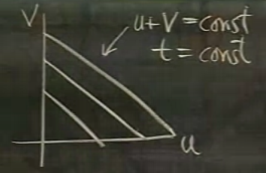
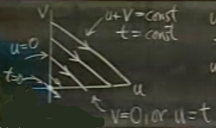
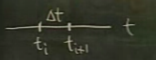
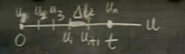

Ders 21
Evrişim (convolution) tekniği, iki fonksiyon üzerinde işlem yaparak üçüncü bir fonksiyon elde eder, ve özel bir işareti vardır.
$$ f(t) * g(t) $$
Elde edilen fonksiyon $f(t)$'ye neredeyse hiç benzemeyecektir. Evrişim işlemini faydalı hale getiren iki sebep var. Birinci fayda formel tanımıyla alakalı. Diyelim ki üstteki iki fonksiyonun ayrı ayrı Laplace Transformu
$$ F(s) = \int_0^{\infty} e^{-st} f(t) \mathrm{d} t $$
$$ G(s) = \int_0^{\infty} e^{-st} g(t) \mathrm{d} t $$
İki fonksiyonun çarpımının Laplace transformunu elde etmek için fonksiyonların ayrı ayrı transformunu bir şekilde bir şekilde kullanan bir formül olsa iyi olmaz mıydı? Böyle bir fonksiyon var mıdır?
Dolaylı yoldan evet. Transformların çarpımı, fonksiyonların çarpımının değil ama "evrişimlerinin" transformuna eşittir. Yani
$$ F(s)G(s) = \int_0^{\infty} e^{-st} (f*g) \mathrm{d} t \qquad (1) $$
Peki niye böyle bir kısayolun olması iyi bir şey? Faydayı belirttik ama sebebini belirtmedik.
Bunu anlamak için önce üstel serilere bakalım. Hatırlayalım, Laplace transformunun güç serileriyle (power series) paralelliği vardı
$$ F(x) = \sum a_n x^n $$
$n$'yi $t$ yapıp sürekli ortama geçince Laplace transformunu elde ediyorduk.
Şimdi ikinci fonksiyon
$$ G(x) = \sum b_n x^n $$
Üstteki formüllerde katsayı için $a_nb_n$ kullansam, bu $F(x)$ ve $G(x)$ ile bir şekilde bağlantı yaratır mıydı? Cevap dolaylı yoldan evet. Aşağıdaki formülde $c_n$'i $a_n,b_n$ ile ilintilendiren bir formül lazım bize.
$$ F(x)G(x) = \sum c_n x^n $$
Bu formül ödeviniz olsun, ama bu formülü bir kere bulunca sürekli ortam için birazdan vereceğimiz formüle ne kadar benzediğini göreceksiniz.
$$ f(t)*g(t) = \int_0^t f(u)g(t-u) \mathrm{d} u $$
Ne biçim bir formül bu? Onu anlamanın en iyi yolu onu kullanarak bir şeyler hesaplamak herhalde. Not: Kabaca bir tanım şöyle olabilir, $t$ bazlı iki fonksiyon alınıyor, sıfır ile $t$ değeri arasındaki tüm değerler $f$ için olduğu gibi, $g$ için tam tersi şekilde $f,g$'ye hesaplattırılıp birbirleri ile çarpılıyor.
Bu arada evrişim sırabağımsız (commutative) bir işlemdir, yani
$$ f \star g = g \star f $$
Evrişim formülüne bakınca sırabağımsızlık bariz değil, çünkü formül simetrik durmuyor, ama evrişim formülünü (1)'deki gibi görürsek, o zaman bariz.
$$ \mathcal{L} (f*g) \leadsto F(s)G(s) $$
işe, $F(s)$ ve $G(s)$ çarpımı sırabağımsızdır, o zaman evrişim de sırabağımsızdır.
Örnek
$t^2 * t$'yi hesaplayalım
$$ t^2 * t =\int_0^t u^2 \cdot (t - u) \mathrm{d} u $$
$$ = \frac{u^3}{3}t - \frac{u^4}{4} \bigg]_{0}^{t} = \frac{t^4}{3} - \frac{t^4}{4} = \frac{t^4}{12} $$
Pür formül kullanan çözüm böyle. Ama hile (!) yaparak Laplace transformunu kullanabiliriz.
$$ t^2 \leadsto \frac{2}{s^3}, t \leadsto \frac{1}{s^2} $$
Bu transformların çarpımını alırsak
$$F(s)G(s) = \frac{2}{s^5} $$
Üsttekinin ters Laplace'i nedir?
$$ \mathcal{L}^{-1}(\frac{2}{s^5}) = \frac{1}{12}t^4 $$
Bunu nasıl hemen bulduk? Bildiğimiz bir ters transform şöyle
$$ \mathcal{L}^{-1}(\frac{4!}{s^5}) = t^4 $$
Bunu alıp iki üsttekine çevirmek için 12 ile bölmek gerekiyordu.
Örnek
$$ f(t) * 1 = \int_0^t f(u) \ 1 \mathrm{d} u $$
$$ = \int_0^t f(u) \mathrm{d} u $$
Şimdi evrişim işleminin Laplace Transformu ile bağlantısını ispatlayacağız.
$$ F(s)G(s) = \int_0^{\infty} e^{-su}f(u) \mathrm{d} u \cdot
\int_0^{\infty} e^{-sv} g(v) \mathrm{d} v
$$
Üsttekini cebirsel olarak bir yere "doğru" manipüle etmeden önce, belki şunu düşünsek daha iyi olur. "Neyi" manipüle edersek üstteki forma geliriz? Çift entegrallerde entegre edilenleri her biri "tek bir şeyin" fonksiyonu olan ayrı grupların çarpımı olarak görmek ise yarar, çünkü o zaman mesela iç entegral her neyse o değişkene göre diğeri sabit sayılır, dışarı atılabilir, vs. Yani üsttekine alttaki formülden gelebiliriz
$$ = \int_{0}^{\infty} \int_{0}^{\infty} e^{-s(u+v)} f(u)g(v) \mathrm{d} u \mathrm{d} v $$
Daha da basitleştirelim. Eğer $t=u+v$ olsaydı (ki $t$ burada yeni bir değişken olarak dışarıdan formüle dahil ediliyor) işimiz kolaylaşırdı. $u=u$ olarak alırız, $v$ artık kullanılmaz, $t-u = v$ yeterli.
$$ = \int \int e^{-st} f(u)g((t-u)) \mathrm{d} u __ \mathrm{d} t $$
Üstte $dt$ kullanmak istiyorum ama bu değişimi dikkatli yapmak lazım, boş bırakılan yere ne geleceğini bulmak için Jacobian matrisini kullanmam lazım.
$$ \mathrm{d} u \mathrm{d} v = \frac{\partial(u,v)}{\partial(u,t)} \mathrm{d} u \mathrm{d} t $$
$$ u = u $$
$$ v = t - u $$
$$ J = \left|\begin{array}{rr} 1 & 0 \\ -1 &1 \end{array}\right| = 1 $$
Yani
$$ \mathrm{d} u \mathrm{d} v = 1 \mathrm{d} u \mathrm{d} t $$
O zaman
$$ = \int \int e^{-st} f(u)g((t-u)) \mathrm{d} u \mathrm{d} t $$
Tamam. Bir adım daha kaldı, entegral sınırlarını da değiştirmek lazım. Bu biraz daha zor olabilir.
İç entegrale bakalım, $u$ değişiyor, $t$ sabit tutuluyor. Daha doğrusu $t=u+v$ olduğuna göre $u+v$ bir sabit. Bir $u,v$ grafiği düşünürsek,

$u+v$ gösterilen düz çizgiler üzerinde sabittir.

$u$ üstteki oklar yönünde artar. Peki $u$ bölgeye soldan girdiğinde değeri nedir? Sıfır. Alttan çıkarken değeri nedir? O noktada $v=0$, $u+v = t$ olduğuna göre, $u=t$.
$$ = \int \int_0^t e^{-st} f(u)g((t-u)) \mathrm{d} u \mathrm{d} t $$
Dış entegral, orijin noktasındaki $t=0$'dan başlayarak tüm çizgiler için bu işlemi yapmak istiyorum, bu işlem sonsuza kadar devam ediyor.
$$ = \int_0^{\infty} \int_0^t e^{-st} f(u)g((t-u)) \mathrm{d} u \mathrm{d} t $$
İspat tamamlandı.
Laplace Transformunu ile evrişim işlemi arasındaki bağlantıyı gördük.
Evrişim çok önemli bir işlemdir, ama onu kullanan pek çok kişi onu Laplace Transformuyla alakalı olarak kullanmaz. Onu olduğu gibi tek başına kullanırlar. Bir örnek vereyim: benim kızım bir doğa / çevre mühendisi (environmental engineer), ve müşterileri için risk analizi yapmak gibi işleri var. Bir gün bir müşterisi için bir bilimsel makale okuyordu, makale asit yağmuru ile alakalıydı, yağmur gelirse çevre ne kadar zarar görür gibi konularla ilgiliydi. Verilen zararın hesabı için evrişim kullanılıyor dedi, bana sordu "evrişim nedir?". Makaleyi ben de okudum, hakikaten ilginçti, yani bu alanda evrişim hesabının olması ilginçti.
Sonraları diğer insanlar da benzer sorularla bana geldiler. Kuzey Kutbu'nda delme işlemi yapan bir mühendis geldi mesela, delme sırasında algılanan radyoaktiviteyi kullanıp milyonlarca yıl önceki iklim şartları hakkında hesap yapmakla ilgileniyordu, o da evrişim hesabını kullandı.
O yüzden şimdi ben de size pek çok alana adapte edilebilecek, genel, basit bir model göstereceğim, bu modeli örnek olarak aklınızda tutmanız evrişim hesabını anlamanız için iyi olur. Problem radyoaktif atıklarla alakalı.
Bir fabrika radyoaktif atık üretiyor.
$f(t)$: atım hızı (rate), $t$ sene. İki zaman noktasını düşünürsek, $t_i,t_{i+1}$ arasında üretilen radyoaktif atık $\approx f(t_i) \cdot \Delta t$. Zaman aralığı küçüldükçe bu hesap kesinleşecek.

Problemim, $t=0$'dan başlarsam $t$ anında ne kadar radyoaktif atık biriktiğinin hesabı. Bu hesabı zorlaştıran radyoaktif maddelerin aynı anda çürüyor olmasıdır.
Yani bir yandan atık üretiliyor, bir yandan bu atıklar bir şekilde radyoaktif özelliklerini kaybediyorlar. O zaman yaptığımız hesap üretilen madde öbeklerinin, parçalarının birikintide "ne kadar beklediğini" de hesaba katmalı ki onun çürümesini de bir yandan hesaplayabilelim.
Çürüme hesabı basit bir diferansiyel denklem, $t$ anında kalan madde için, eğer $A_0$ ile başlanırsa çözümü
$$ A_0e^{-kt} $$
$t$ ekseninin ismini değiştirip $u$ yapalım (bunu niye yaptığımız birazdan belli olacak)

O zaman daha önce hesapladığımız gibi $[u_i,u_{i+1}]$ arasında üretilen radyoaktif atık $\approx f(u_i)\Delta u$.
$t$ anında çürüme ise
$$ \approx f(u_i)\Delta u \cdot e^{-k ( \ \ \ )}$$
$e$'nin solundaki kısım atılan, eklenen kısım. Çürüme hesabına göre orası bir nevi $A_0$. Peki $e$'nin üstündeki boşluğa ne yazılmalı? Oraya eklenen kısmın çürüdüğü zaman aralığı konulmalı. O zaman aralığı nedir? $u_i$'da atılmış, $t$ anına bakıyorum, o zaman $t-u_i$ aralığı kadar çürümüş demektir.
$$ \approx f(u_i)\Delta u \cdot e^{-k ( t-u_i )}$$
Şimdi tüm $u$ aralıklarını alıp birbiriyle toplarsam, $t$ anındaki toplamı bulurum,
$$ \approx \sum_{i=1}^{n} f(u_i) e^{-k(t-u_i)} \Delta u $$
$\Delta u \to 0$ iken üstteki "Riemann toplamı" alttaki formüle yaklaşır (aralıklar $u_1 = 0$, ve $u_n = t$ arasında)
$$ \to \int_0^{t} f(u) e^{k(t-u)}du $$
Üstteki fonksiyon bir evrişimdir,
$$ = f(t) * e^{-kt} $$
Yani hesap atık fonksiyonu ile çürüme fonksiyonun bir evrişimidir (convolution of).
Pek çok diğer problem üstteki probleme indirgenebilir, onun merceğinden anlaşılablir. Mesela çöp atıklarını düşünelim, ama çöp atıkları çürümüyor olsunlar. O zaman evrişim hesabı
$$ f(t) * 1 $$
1 kullanıldı çünkü çürüme yok.
Bir diğer örnek, tavuk yetiştiriliyor, $f(t)$ yeni tavukların üretilme oranı (kg), $t$ doğdukları anda civcivlerin büyüme büyüme oranı, $t$ anında kaç kilo tavuk olduğu $f(t) * t$.
Yukarı